#8916 Wer wenn nicht wir
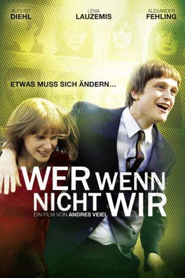 
 IMDB-Wertung: 6.4 / 10
IMDB-Wertung: 6.4 / 10  Metascore: 0
Metascore: 0 
Bernward Vesper, Sohn des NS-Schriftstellers Will, beginnt in Tübingen mit dem Studium. Dort lernt er die Pfarrerstochter Gudrun Ensslin kennen und lieben. Die beiden gründen auf Bernwards Initiave hin einen Verlag. Neben politisch orientierten Schriften will Bernward auch das Werk seines Vaters neu auflegen - trotz der ideologischen Distanz. Dies bringt das Projekt der beiden Liebenden an ihre Grenzen, sowohl ideell wie finanziell. Zudem vergnügt sich Bernward, entgegen Gudruns Vorstellungen, auch immer wieder mit anderen Frauen. Nach einem Umzug nach Berlin läuft es besser im Verlag. Doch die Ereignisse im Ausland, wie z.B. die Kubakrise und der Vietnamkrieg, und in Deutschland selbst belasten die Beziehung des Paares, weil sie nicht die gleichen Vorstellungen davon haben, wie sie auf die Geschehnisse reagieren sollen. Als die Verleger dann Kontakte in die linke Szene knüpfen, lernt Ensslin einen gewissen Andreas Baader kennen.
Jahr: 2011
Dauer: 125 Minuten
FSK: 12
Land: Deutschland Studio: Senator FilmTonspuren:
Untertitel:
Auflösung: 1080p (1920x816) Größe: 6809 MB
Genre: Drama, Biographie
Regisseur: Andres Veiel
Drehbuch: Spike Jonze
Soundtrack: Annette Focks
Darsteller:
 August Diehl als Bernward Vesper
August Diehl als Bernward Vesper- Lena Lauzemis als Gudrun Ensslin
- 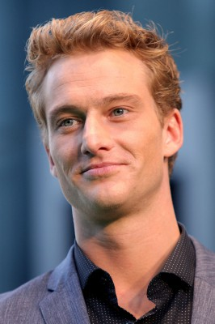 Alexander Fehling als Andreas Baader
- 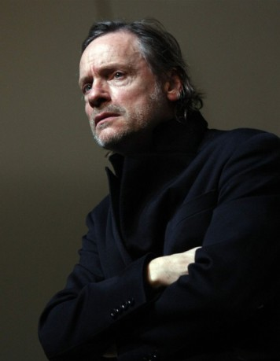 Michael Wittenborn als Helmut Ensslin - Vater
- 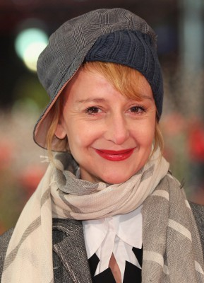 Susanne Lothar als Ilse Ensslin - Mutter
- 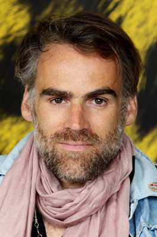 Sebastian Blomberg als Klaus Roehler
- 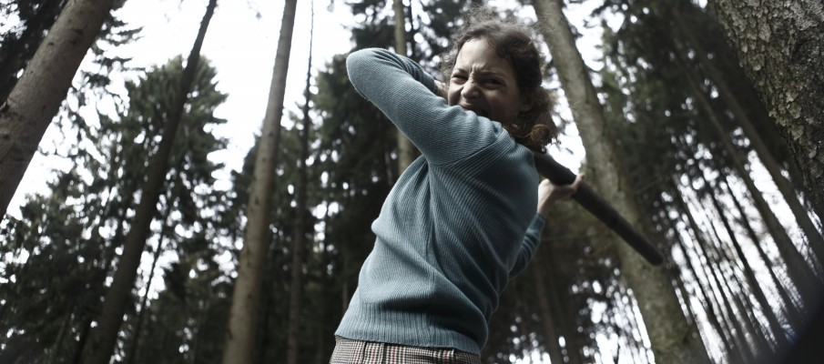 Vicky Krieps als Dörte
 Christina Hecke als Anne
Christina Hecke als Anne- Maria Dragus als Ruth Ensslin
- 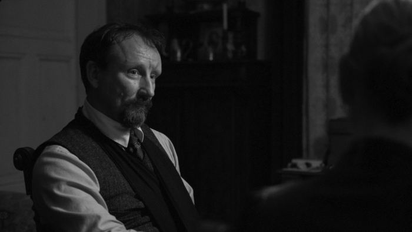 Rainer Bock als Verteidiger
- Susanne-Marie Wrage als Gefängnisleiterin
- 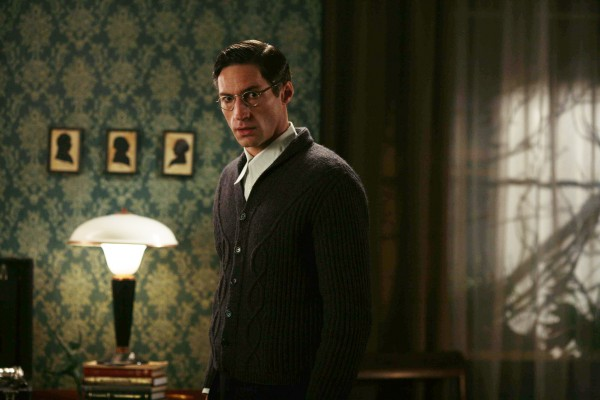 Benjamin Sadler als Walter Jens
- 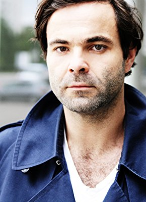 Andreas Döhler als junger Verleger
- Jonas Hämmerle als Bernward Vesper - 10 Jahre
- 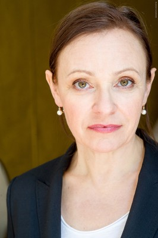 Heike Hanold-Lynch als Mentorin von Gudrun Ensslin
- 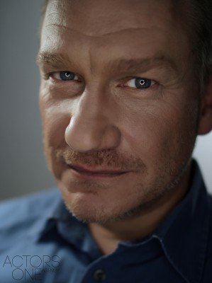 Joachim Paul Assböck als Journalist
- Björn von der Wellen als Wohnungsbesitzer
- John F. Kennedy als Himself (archive footage) (uncredited)
- Thomas Thieme als Willi Vesper - Vater
- Imogen Kogge als Rose Vesper - Mutter
- Martin Butzke als Dieter Kunzelmann
- Stephanie Stremler als Ulrike
- Peter Benedict als Verleger
- Kathrin Wehlisch als Ello
- Hasko Weber als Schriftsteller
- Eddie Jordan III als Stokely Carmichael
- Johannes Allmayer als junger Verleger
- Bettina Redlich als Vermieterin
- Hanno Koffler als Uli Ensslin
- Henriette Nagel als Johanna Ensslin
- Greta Bohacek als Ruth - 6 Jahre
- Hanno Langner als Felix - 1 Monat
- Leo Mio Allenberg als Felix - 1 Monat
- Heinrich Hoelzke als Felix - 4 Monate
- Kasper Tils als Felix - 4 Monate
- Levi Sokrates Tils als Felix - 10 Monate
- Magdalena M. Riedel als Felix - 2 Jahre
- Mina Kantowski als Felix - 2 Jahre
- Diva Tomaz als Sängerin
- Carmen-Maja Antoni als Gemeindeschwester
- Markus Lerch als Arzt
- Lutz Blochberger als Kommissionsmitglieder
- Justus Carrière als Kommissionsmitglieder
- Manfred Möck als Kommissionsmitglieder
- Christoph Glaser als Kommissionsmitglieder
- Hark Bohm als Kritiker
- Norbert Hülm als Parteimanager
- Claudia Geisler-Bading als Sekretärin
- Alexander Khuon als Rudi Dutschke
- Hubertus Hartmann als Richter Amtsgericht
Datei: X:\2011(N-Z)\Wer wenn nicht wir (2011, FSK12, 1920x816).mkv seit 07.05.2018
Festplatte: HD 2011(G-Z)
 Es gibt insgesamt 132 Filme in der Gruppe '2011(N-Z)'
Es gibt insgesamt 132 Filme in der Gruppe '2011(N-Z)'